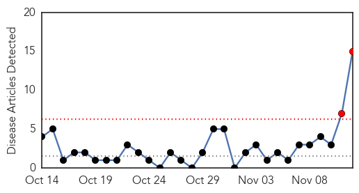
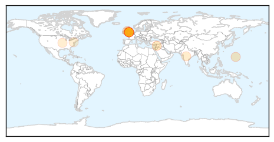
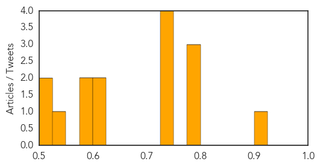

Measles
30-Day Web Trend
0 alerts, 0 warnings

30-Day Twitter Trend
0 alerts, 0 warnings

Article Locations

Article Confidences

Top Articles:
- 0.942
- WHO warns that progress towards eliminating measles has stalled: 2015 targets will not be met
- 0.583
- UN calls for more efforts to prevent children's deaths from pneumonia
- 0.540
- Steep drop in pneumonia deaths in last decade, but more must be done to reach the most vulnerable children—UNICEF
- 0.520
- When to take your child to the doctor, and when to stay home.
Top Tweets:
-
No tweets found for Nov 12, 2014
Hepatitis
30-Day Web Trend
2 alerts, 0 warnings

30-Day Twitter Trend
0 alerts, 0 warnings

Article Locations
Article Confidences
Top Articles:
- 0.916
- Dentist health scare: why are 22,000 patients being traced?
- 0.799
- Dentist Desmond D'Mello at centre of infection alert pictured
- 0.799
- Dentist Desmond D'Mello at centre of infection alert pictured
- 0.783
- 22,000 dental patients recalled over HIV and blood-borne virus fears amid concern over Nottingham dentist Desmond D'Mello
- 0.750
- Aid groups ‘afraid’ amidst Arsal hepatitis epidemic
- 0.748
- Desmond D'Mello: First picture of dentist at centre of public health scare
- 0.747
- HIV and hepatitis scare: Dentist named as Desmond D'Mello
- 0.732
- More than 22,000 patients recalled in alert over HIV-positive dentist: Every person treated over 32 years urged to come forward for tests
- 0.623
- Thousands of dental patients in Britain to be tested for HIV after 'breaches of infection control procedures'
- 0.606
- Pneumonia: The scourge that's killing India's children and what you can do to tackle it
- 0.582
- 22,000 UK patients recalled for tests over HIV fears
- 0.580
- Thousands of dental patients in Britain to be tested for HIV after 'breaches of infection control procedures'
- 0.536
- Highly effective, expensive new medicine for Hepatitis C
- 0.518
- Police probe into dentist patient death follows biggest recall of patients in NHS history
- 0.509
- New treatment regimen for hepatitis C in transplant patients produces promising results
Top Tweets:
-
No tweets found for Nov 12, 2014